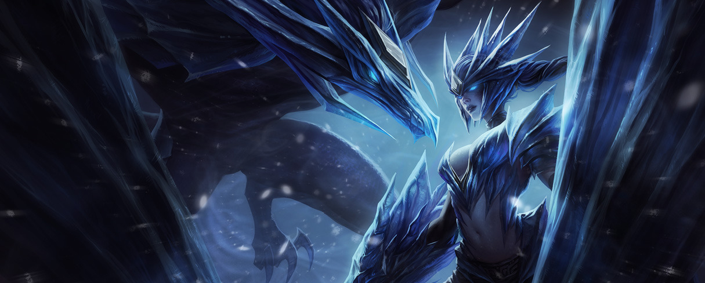

League of Legends
League of Legends es un juego competitivo en línea de ritmo frenético, que fusiona la velocidad y la intensidad de la estrategia en tiempo real (ETR) con elementos de juegos de rol.
Dos equipos de poderosos campeones, cada uno con un diseño y estilo de juegos únicos, compiten cara a cara a través de diversos campos de batalla y modos de juego.
Con un plantel de campeones en constante expansión, actualizaciones frecuentes y un emocionante panorama competitivo, League of Legends ofrece posibilidades de juego ilimitadas a usuarios de todos los niveles de habilidad.